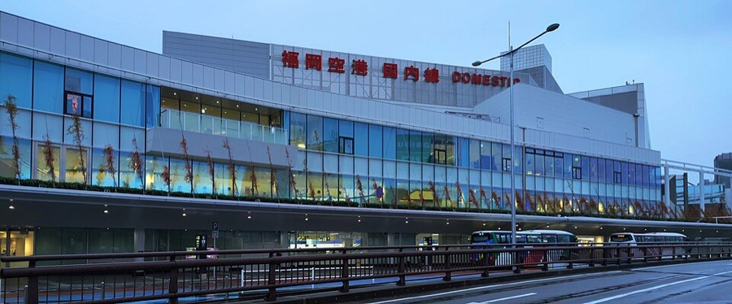
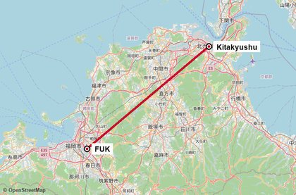
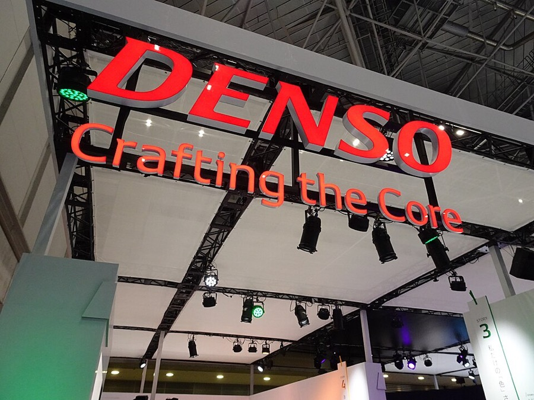
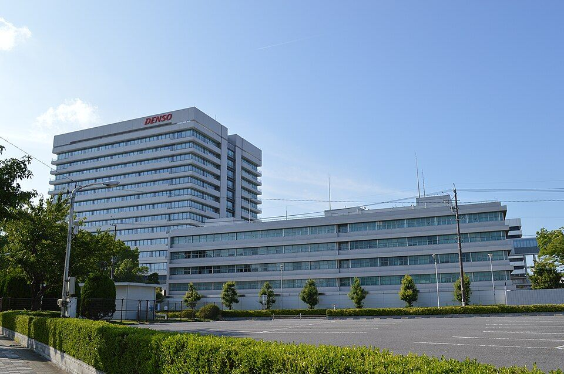
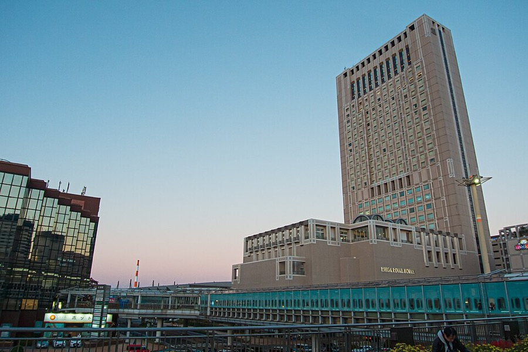
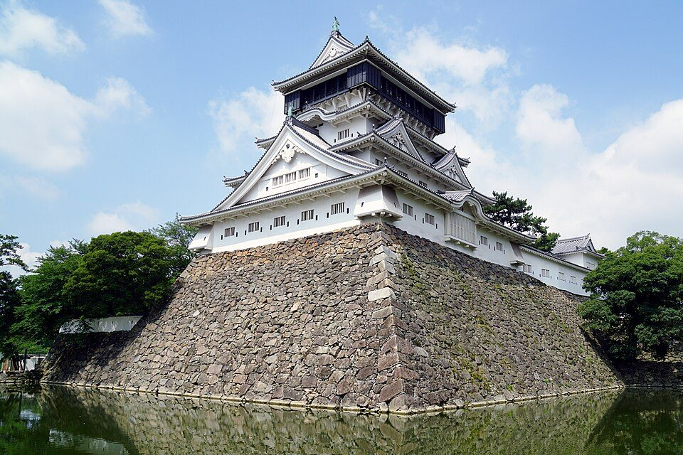

Mi 02.12.2026Fukuoka, Kitakyushu · DENSO Kyushu
10:5012:30Landung 04:30 Wien1:40 h
selbstKE791 Seoul-Incheon (ICN) → Fukuoka (FUK) · Pflichtflug
Gebucht am 11.09. über Barbara, 196,27 Euro, nicht stornierbar. Landung am internationalen Terminal. Einreise mit dem Visit-Japan-Web-QR-Code (in Fotos und am Kalendereintrag): einmal an der Immigration, einmal am Zoll-Terminal.
AnsatzTransfer und Abholung des AC hängen an diesem Flug.

13:3014:301:00 h
fix · AWOMittagessen und Briefing zum Japan-Programm, Takenoya
Yakitori-Kette aus Hakata, 1976 als Lokal mit 13 Plätzen gegründet — 2026 also 50 Jahre alt, heute rund 50 Filialen. Spezialität „Guruguru Torikawa“: gerollte Hühnerhaut, drei Tage Vorbereitung. Bestätigt ist die Filiale im Inlandsterminal, 3. OG — vom internationalen Terminal geht es mit dem Shuttle oder dem Bus des AC hinüber.

14:3015:301:00 h
TransferBus Flughafen Fukuoka → DENSO Kyushu, Kitakyushu
Rund 55 Kilometer, ohne Verkehr 51 Minuten — mit Verkehr wird die Stunde knapp. Unterwegs gibt Nozomi Sugahara einen Überblick über Kyushu.

15:3017:001:30 h
fix · AWOFirmenbesuch DENSO Kyushu
Die Adresse 5-4-1 Honjo, Yahatanishi-ku ist DENSO Kyushu, eine hundertprozentige Denso-Tochter — nicht die Zentrale in Kariya. 1993 als Kitakyushu-Werk von Nippondenso für Auto-Klimaanlagen gestartet, seit 2014 unter diesem Namen. 1.565 Beschäftigte, 64 Mrd. Yen Umsatz. Gebaut werden:
- Klimaeinheiten und Kühlermodule
- Common-Rail-Injektoren und Wischersysteme
- neu seit 2026: Wärmetauscher für Elektroautos und Inverter
AnsatzFertige Anekdote: Ein Denso-Team um Masahiro Hara entwickelte 1994 den QR-Code — und Denso setzt die Patente für die Normcodes nicht durch. Eine Technologie veränderte die Welt, weil sie verschenkt wurde. Frag, wo im Werk heute noch QR-Codes die Teile lenken.


17:0017:300:30 h
TransferBus DENSO → Kokura
Rund 18 Kilometer.
17:3018:301:00 h
fix · AWOCheck-in RIHGA Royal Hotel Kokura
2-14-2 Asano, Kokurakita-ku, Tel. +81 93-531-1121. 30 Stockwerke, 132 Meter, direkt am Bahnhof Kokura — überdachter Weg zum Shinkansen-Ausgang, drei Minuten. Steht auf dem Gelände des früheren Baseballstadions Kokura Horakuen. Eine Nacht, über den AC reserviert, Zahlung vor Ort.

18:3020:001:30 h
fix · AWONetzwerkempfang im Hotel
Erster Abend mit dem Tokioter AC-Team.
AnsatzChristina Schösser und Rumi Onodera sind die Ansprechpartnerinnen für den Kurzimpuls am Freitag.
ab 20:00
optionalKokura Castle von außen
Rund 15 Minuten zu Fuß vom Hotel. Innen nur bis 18:00 geöffnet, abends bleibt die beleuchtete Burg von außen.
